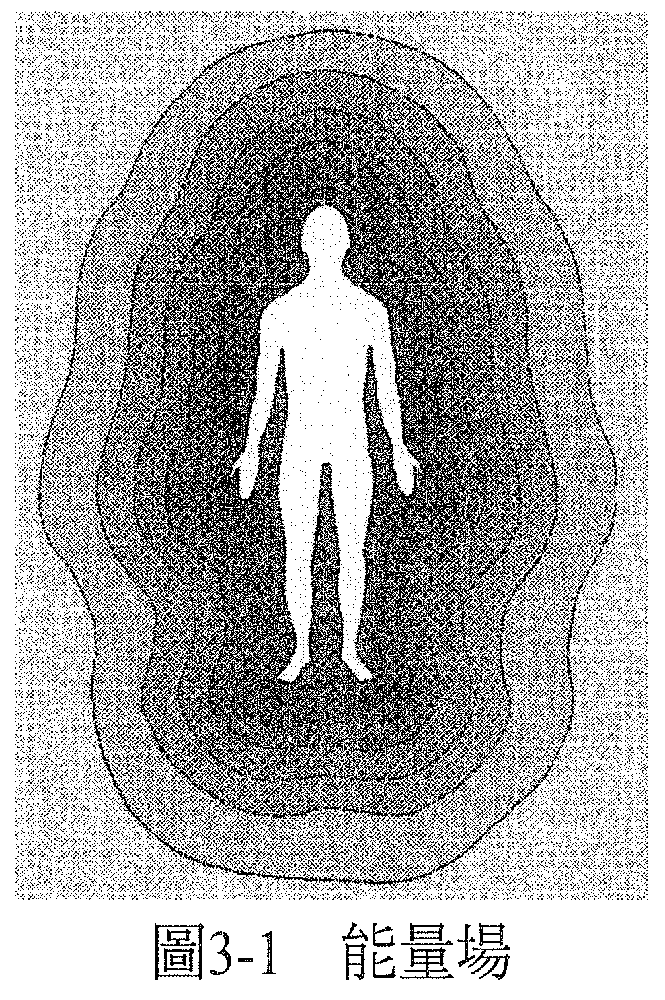

第 3 章 人类的能量系统
你是一个意识。
意识可以定义为：「存有的体验」（the experience of being）。
因此，你是一个存有——正在体验的存有。你一直都存在（being），也永远会存在。当你活在人的形体之中，你称自己为人性的存有（human being［1］）。
［1］
在英文中，这个词也是固定用法，一般可直接指称「人」。
意识也可以形容成一种能量的形式，有时称为「生命能量」。当意识或生命能量离开身体，身体就死亡了。我们所谓的身体并不是真正的你，它只是承载意识的载具，意识才是你。此外，身体也是你意识／能量的延伸，是你意识／能量里密度较大的部分，因此它也能反映出本是意识的你处于何种状态。
你和你的身体（如果也要包含各灵妙体〔subtle bodies〕的话，「体」就会是复数的）一起组成了一个能量系统，也就是由不同的能量密度、不同的频率，一起构成一个充满变化的关系。
虽然这类概念已经流转传播了好几千年，但直到最近才出现了科学的证据。现在，透过克里安（Kirlian）照相术已经有可能，而且也真的成功地看到了。这套照相术的系统在拍摄某样与底片接触的东西时，会用电流穿过摄影的底片。他们先是拍了树叶的照片，照片冲洗出来以后，树叶本身的影像被一圈看似从它散发出来的能量场所包围。
切掉一部分树叶之后，用克里安照相术再照一次照片，可以看到树叶本身的影像是少了一角的，但周围的能量场依然完整，一部分也没少。这表示，树叶的能量场并非只是从树叶本身散发出来的东西而已，它是独立存在的。
用克里安照相术拍摄人手时，出现了一种能量的图案。已经有人用克里安照相卫拍摄能量治疗师的双手，证明了他们可以影响能量的形态，当他们有意识地透过双手传送能量，克里安相片上的形态改变了。
如此说来，克里安相片并不是反映出手的肉体结构，而是手的主人的意识还有能量场。当这个人的意识有了改变，反映在克里安照片里，就会看到这个人的能量场也有了改变。
运用克里安照相术的人将显现出来的能量场加以量化后，能找出一个人能量场的「脆弱处」，而这与身体里特定的脆弱处或症状互有关联。事实上，甚至有证据显示，在身体层面出现脆弱处之前，就已经能够先在能量层面上侦测出来。
意识里的改变会带来能量场的改变。在身体层面出现改变之前，能量场就已经会先显现出改变。因此，显现的过程会有一个方向：从意识，到能量场，再到身体。
意识→能量场→身体
当我们这么来看待这个过程，就会清楚知道，不是身体创造出能量场，而是能量场（也就是意识的效应）创造了身体。
我们所认为的身体，是一个过程的最后结果，而这个过程始于意识。意识、能量场、身体全都处于互有关联的平衡状态中。当一个决定、情绪反弹导致意识出现了一个充分的转变，能量场和身体会想要与它维持平衡，于是身体便会用紧张的形式产生症状，反映意识里的紧张。
在疗愈进行中，当能量场得到修复、重归平衡，意识和身体就会进入新的平衡状态，产生新的能量形态，紧张与相关的症状就能够解除了。
要想知道这是怎么发生的，就得更进一步看看意识的细部、能量系统，还有身体。
有一天，我受邀去医院找一位从电梯井里摔下去的伤患。她的身体受到撞击后，断成好几截，损伤到脊髓。她瘫痪了，觉得胸腔以下没有知觉，所以当我触摸她身体的几个部位时，她都没有反应。
当我的手放在她腿的侧边移动时，虽然我并没有碰触她的腿，但她描述感觉仿佛有一道波动，沿着她的腿往下移。既然我没有碰到她，这就不可能是身体上的知觉。而当我真正摸到她的时候，她因为脊髓受损的原故反而没有感觉。
要沿用前述的概念解释她怎么会有这种感觉，我们可以想象她是一个能量体，这能量体占据着身体，接着再想象能量体和身体分开了，所以她可以体验并感受到能量体，但感觉不到身体。
我们所经验到的一切，都是透过能量体在经验的。当能量体和身体占据同一处空间，它们会在身体的层面上构成一个并行的过程，例如：神经受到刺激、电化反应、在神经间移动的电脉冲等。
物质科学研究的是身体层面上的过程，但不见得就是意识层面所经验到的。当一个人经验到他的意识去了别的地方，如在梦境里或灵魂旅行时的那样，他会觉得那个地方仿佛是用身体的感官经验到的，但他身体感官的器官并没有参与。不过，这次经验的记忆还是可能会被储存在身体里。
物质科学都以一个概念为基础：病症的肇因都是外在的（例如细菌导致疾病，意外导致受伤等）。然而根据形上学的原则，只有在意识里也有适合让这些状况发生的状态时，它们才会发生。从形上学的角度来说，我们认为所有发生在物质层面上的一切都是「果」，而「因」存在于意识之中。
物质的形态和形上的形态并不相互冲突，反而说明了当意识的状态创造出适当的环境时，在身体的层面上也会发生一个并行的过程。
意识不只驻于脑部，而是全身，所以透过意识，你连结到全身的每一个部分。事实上，你的意识还会延伸到身体之外，通常往四面八方延伸个一至两公尺远（也有人说是无限还远）。因此，你意识的这个部分，你的能量场，其实也就是我们所谓的「气场」（aura）。
气场、能量场外围的部分颇为精微，愈接近所谓的身体，能量密度就愈浓稠。我们可以把气场视为是由几种不同密度的能量所构成，与从不同能量体（身体、情绪体、心智体、星灵〔astral〕体、乙太〔etheric〕体、菩提〔buddhic〕体、因果〔casual〕体）散发出的不同能量层次相应，彼此互相贯穿，以不同的振动频率存在于同一个空间。本书于第十二章会更详细讨论这些能量体（见图 3-1）。

既然愈接近所谓的身体，能量的密度就愈大，所以我们又可以把身体视作一个能量密度较大的形式。
我们平常对身体的认识，会让我们每个人把自我视为一个生物结构体，但如果仔细看一下物质的结构基材，就会发现，自我其实也是一种能量的结构体。
最小的生物单元是细胞，由分子所构成，而分子是由原子（或离子）构成，原子（或离子）又是由粒子（中子、质子、电子）构成，接着这些粒子又由更小的粒子（夸克、微中子、胶子等）构成，更小的粒子又由微小的黑洞与白洞构成，最后，每个洞都有一个正极或负极。
这些黑洞与白洞的形态，这些能量，组成了我们物质宇宙中所谓的粒子。其形态构成的形态，又组成了较大的粒子，接着它们的形态又组成了原子。原子的形态组成分子，分子的形态组成细胞。细胞的形态组成组织，组织的形态组成器官。
器官的形态组成了有机体。
因此我们可以说，整个有机体都只不过是由某种结构里微小的黑洞与白洞所构成的，只是能量而已。
我们在太空里看到地球绕太阳转，就像电子绕着中子转一样。不妨把太阳系视为原子，而它以同样的空间比例，存在于我们称为银河系的更大分子中。我们可以把其他的银河系、其他的分子，视为更大结构体的一部分。以此类推。
我们在太空里也可以看到黑洞与白洞（类星体）。无论是「往外看」还是「往内看」，我们都看到同样的东西。虽然从某个观点来看，我们都同意把我们看到的叫做「物质」，但我们也可以单纯地视它为能量，而且这么做有个好处，当我们把它视为能量，就不受物质「定律」所局限了。既然我们用来形容自己经验的语言会创造出我们的实相，那我们是可以创造出看起来能违抗物质「定律」的疗愈和效果的，因为能量作用的方式与物质的结构体不一样，它遵循的是不同的「定律」。
当我们把物质的结构体单纯视为一种能量的形式，只不过是比围绕在它周围的能量场更稠密的一种能量形式，我们就能把自己看成是一个由不同密度的能量所构成的能量系统。
能量在健康、均衡的个体里，会流动得很顺畅。意识能够顺利地回应所遇到的每一个情况。一旦个体因为某些决定或情绪反弹，而阻碍了能量的流动，如果这个障碍的密度够大，就会在身体层面导致病症。
意识→能量场→身体
决定→障碍→病症
因此我们可以说，所有的病症都只是反映出卡住的能量。当我们做出不同的决定或是接受疗愈，而重新平衡能量场，就能疏通能量，症状就会解除了。
当我们去看意识、能量场还有身体的形态，就会发现身体是一个过程的结果，起始点是我们的意识，然后这过程会在能量场里穿行。如果我们按照一种自己相信为可能的方法，把阻碍能量流的决定加以扭转，能量场就会重归平衡，症状就能解除。
意识→能量场→身体
改变决定→疏通→症状解除
疗愈能量场的时候，其作用会朝两个方向发挥：意识及身体，于是我们会经验到意识有了改变（意识层面的压力纾解了），身体层面的紧张与症状也会纾解。小黑洞和小白洞重新排列。这个生物结构体会产生重组，症状就解除了。过程的速度不以快、慢来论，它也一样是由你相信会多快或多慢所决定。
意识→能量场→身体
紧张纾解→疗愈（疏通）→症状纾解
症状之所以存在的目的，只是想向我们传达讯号：「出现了一个情况」。当这个情况不复存在于意识里，症状也就没有理由存在了。
身体某部位的紧张，反映的是意识有某个部分对于你生活的某件事感到紧张。身体有状况的部位，反映的是生活有状况的地方。当与生活此一部分有关的紧张可以从意识的这个相关部分得到纾解，它就能够从你身体的这个部位中解除。你身体、意识、生活的这个部分，就都能够重回自然的和谐状态，你会回到最佳状态。
所有的疾病、损伤，都是能量受阻后的结果。既然我们能用思维来引导意识或能量，那我们也有能力去疏通自己或别人身上受阻的能量。如此一来，最后就能重回完整的状态。疗愈就发生了。
届时，显而易见的一点是：
——在这个世界上，一切都可以疗愈！——